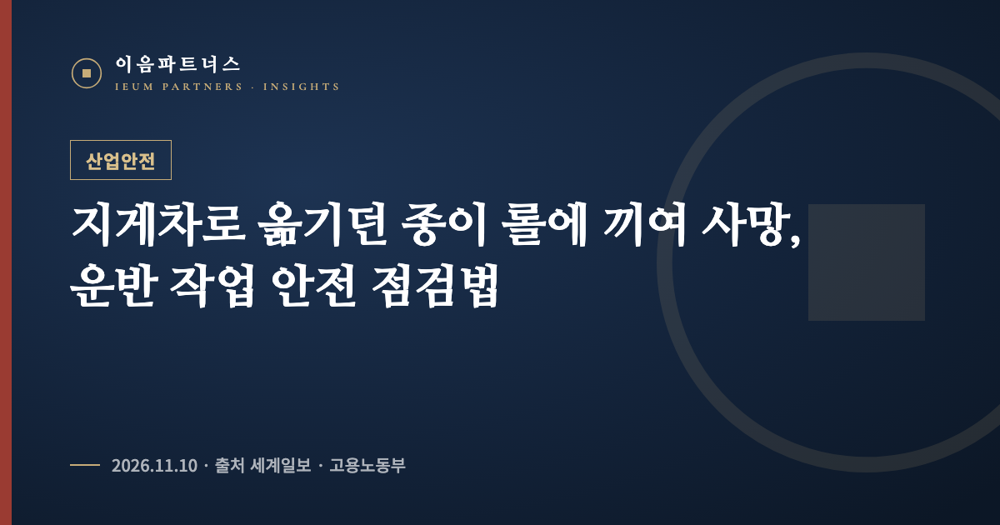

지게차로 옮기던 종이 롤에 끼여 사망, 운반 작업 안전 점검법

지게차는 공장과 창고라면 어디에나 있는 장비입니다. 그런데 2026년 11월 10일 충남 서천의 한 제지공장에서 지게차로 옮기던 종이 롤이 빠지면서 협력사 노동자가 끼여 숨졌습니다. 이 글에서는 사고 내용과 지게차 운반 작업에서 지켜야 할 기본 수칙, 대표님이 확인할 점을 정리합니다.
무거운 짐을 옮기는 일은 매일 반복되기 때문에 위험에 익숙해지기 쉽습니다. 우리 회사의 운반 작업이나 협력사 안전 관리가 걱정되신다면 카카오톡 채널 이음파트너스로 문의해 주세요.
무슨 일이 있었나
사고는 2026년 11월 10일 오후 7시 20분쯤 충남 서천군의 제지공장 슬리터 공정(큰 종이 롤을 정해진 폭으로 자르는 공정)에서 일어났습니다. 지게차로 종이 롤을 운반하던 중 롤이 갑자기 빠져나오며 협력사 소속 노동자를 덮쳤고, 노동자는 끼여 숨졌습니다(세계일보).
회사는 다음 날 고용노동부에 중대재해 발생 사실을 보고하고 공시했습니다. 숨진 노동자는 회사 소속이 아닌 협력사 소속이었고, 노동당국은 원청과 하청의 안전보건 관리체계를 포함해 산업안전보건법·중대재해처벌법 위반 여부를 살펴볼 방침입니다.
조사의 초점은 무엇일까
세계일보는 “중량물 취급 작업 시 필수적인 낙하·이탈 방지 조치와 안전 통로 확보 여부”가 주요 조사 대상이 될 것으로 내다봤습니다(세계일보). 짐이 떨어지거나 빠지지 않게 고정했는지, 사람이 다니는 길과 지게차가 다니는 길이 나뉘어 있었는지가 핵심이라는 뜻입니다.
고용노동부의 2026년 10월 중대재해 사이렌 자료에도 비슷한 사고가 있습니다. 10월 23일 경북 구미의 기계 제조 사업장에서 지게차 적재대에 실려 있던 강관 다발이 굴러떨어지면서 노동자가 깔려 숨졌습니다(고용노동부 중대재해 사이렌).
어떻게 막을 수 있나
고용노동부는 쌓아 둔 화물이 무너지거나 떨어질 우려가 있는 곳에는 출입을 금지하고, 지게차 작업 전에 운행경로와 작업방법, 위험 예방 대책을 담은 작업계획서를 만들어 그대로 작업하라고 안내합니다. 운반 반경 안에 사람이 들어오지 않도록 통제하고, 필요하면 신호수를 두어 지게차와 사람의 움직임을 맞추는 것도 방법입니다.
특히 원청과 협력사 노동자가 한 공정에서 함께 일한다면, 누가 지게차를 몰고 누가 주변을 통제하는지 역할을 미리 나눠 두어야 혼선을 줄일 수 있습니다.
대표님이 지금 확인할 것
- 지게차 작업마다 운행경로·작업방법을 담은 작업계획서가 있는지
- 운반 중 화물이 빠지거나 굴러떨어지지 않도록 고정 방법이 정해져 있는지
- 지게차 동선과 사람이 다니는 통로가 나뉘어 있고, 작업 반경 출입을 통제하는지
- 협력사 노동자가 함께 일하는 공정에서 원청으로서 안전조치를 확인하는지
참고한 자료
- 한솔제지 장항공장서 협력사 근로자 끼임사망… 중대재해 발생 — 세계일보 (2026.11.11)
- '26년 10월 중대재해사이렌(오픈채팅방) 자료 공개 — 고용노동부 (2026.11.02)
운반 작업이 많은 제조·물류 회사라면 우리 회사의 작업계획과 협력사 관리 체계를 카카오톡 채널 이음파트너스에서 함께 점검해 보세요.
※ 이 글은 일반적인 정보 제공을 위한 것으로, 개별 사안은 세무사·노무사 등 전문가와 함께 확인하시기 바랍니다.